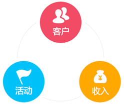
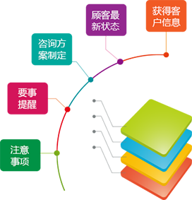
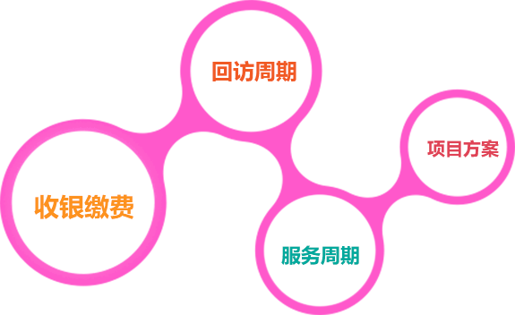

市场活动管理
精简企业管理过程，减少人力沟通成本，让员工更专注于日常业务，让管理者指导和决策更加精准迅速。
艾特CRM能帮助现场人员把市场活动与每个成交客户、每笔收款之间关联起来，统计出哪些市场活动产生的成交客户最多、哪个市场活动投入产出比最高。市场人员再也不需要依靠销售部门就可以知道自己市场活动的ROI，然后根据每类市场活动的投入产出比来分配预算。
售前管理
重构沟通方式，PC端和手机端实时更新顾客最新状态、要事提醒，让销售工作更有效率。
线索管理
当以展厅接待、电话接待、网络接待和市场活动等方式获知客户留档信息后，业务人员进行客流登记，销售顾问需要在UMSCRM系统中维护客户档案（销售机会）。
咨询方案订制
邀约有意向顾客来店咨询，根据顾客情况定制项目方案、服务周期、回访周期、注意事项。

服务过程管理
利用每次交流所得到的数据，规划跨客户生命周期不同阶段个性化体验旅程。全方位与客户进行接触，推进营销流程。
顾客信息管理
艾特CRM可以帮助销售人员记录客户的生日、客户的重要纪念日、客户的兴趣爱好，并且实时提醒销售人员。还可以记录客户的特殊需求、照片对比、服务过程等，让服务人员能更好地满足客户需求。
服务过程提醒
根据顾客的项目方案、服务周期、回访周期、注意事项，自动生成对应任务提醒，让服务人员轻松、快速地维护客户关系，不会错过任何一个客户。
收银缴费
自动根据咨询师的方案生成对应结账单据到收银台，节省沟通成本。同时把单据信息以短信和微信同时发送到顾客手机，提高顾客消费体验。
售后跟踪维系
艾特CRM同时协助企业管理老客户的持续服务周期，提高客户满意度，避免老用户流失；更好从老用户挖掘更多成交机会，提升销售业绩！
全面掌握客户的沟通信息，加强和客户之间的关系，全面提升客户忠诚度、持久度和满意度，提高铺垫项目的成交率。
数据分析
拿数据说话，企业的决策才更加有效。
艾特CRM可以分析客户情况，发现客户的购买规律，找出前20%的大客户，助您有效规划市场营销活动，准确定制销售计划，跟踪营销成本并计算投资回报率，进而改进优化潜在客户的开发方式。
艾特CRM还可以分析销售人员的平均客户数量、成交客户的平均拜访次数、销售人员拜访次数的变化趋势等，提前发现懒惰或不合格的销售人员，早日应对，防止业绩下滑。艾特，您可信赖的事业伙伴。